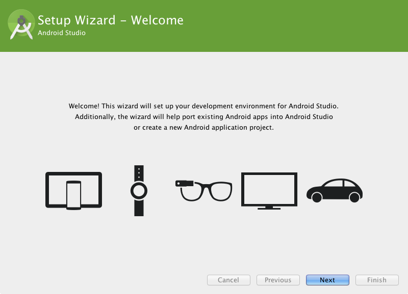

Java is the programming language mainly used to develop android applicaitons. As a result, the Java Development Kit (JDK) is the first component that must be installed.
Java is not installed by default on recent versions of Mac OS X. To confirm the presence or otherwise of Javae version that is installed, open a Terminal window and enter the following command:
java -version
Assuming that Java is currently installed, output similar to the following will appear in the terminal window:
java version "1.7.0_71"
Java(TM) SE Runtime Environment (build 1.7.0_71-b14)
Java HotSpot(TM) 64-Bit Server VM (build 24.71-b01, mixed mode)
In the event that Java is not installed, issuing the “java” command in the terminal window will result in the appearance of a message which reads as follows together with a dialog on the desktop a More Info button which, when clicked will display the Oracle Java web page:
No Java runtime present, requesting install
Open the downloaded disk image (.dmg file) and double- click on the icon to install the Java package:
The Java for OS X installer window will appear and take you through the steps involved in installing the JDK. Once the installation is complete, return to the Terminal window and run the following command, at which point the previously outlined Java version information should appear:
java -version
Android Studio may be downloaded from here
Android Studio for Mac OS X is downloaded in the form of a disk image (.dmg) file. Once the android-studio-ide-{version}.dmg file has been downloaded, locate it in a Finder window and double click on it to open it as shown:
To install the package, simply drag the Android Studio icon and drop it onto the Applications folder. The Android Studio package will then be installed into the Applications folder of the system, a process which will typically take a few minutes to complete.
To launch Android Studio, locate the executable in the Applications folder using a Finder window and double click on it. When attempting to launch Android Studio, an error dialog may appear indicating that the JVM cannot be found. If this error occurs, it will be necessary to download and install the Mac OS X Java 6 JRE package on the system. This can be downloaded from here
Once the Java for OS X package has been installed, Android Studio should launch without any problems.
For future easier access to the tool, drag the Android Studio icon from the Finder window and drop it onto the dock.
The first time that Android Studio is launched after being installed, a dialog will appear providing the option to import settings from a previous Android Studio version. If you have settings from a previous version and would like to import them into the latest installation, select the appropriate option and location. Alternatively, indicate that you do not need to import any previous settings and click on the OK button to proceed.
After Android Studio has finished loading, the setup wizard will appear as shown below
Click on the Next button, choose the Standard installation option and click on Next once again. On the license agreement screen, select and accept each of the licenses listed before clicking on Finish to complete the setup process. The Welcome to Android Studio screen should then appear:
The steps performed so far have installed Java, the Android Studio IDE and the current set of default Android SDK packages. Before proceeding, it is worth taking some time to verify which packages are installed and to install any missing packages.
This task can be performed using the Android SDK Manager, which may be launched from within the Android Studio tool by selecting the Configure -> SDK Manager option from within the Android Studio welcome dialog. Once invoked, the SDK Manager tool will appear as
Within the Android SDK Manager, make sure that the check boxes next to the following packages are listed as Installed in the Status column:
Tools > Android SDK Tools
Tools > Android SDK Platform-tools
Tools > Android SDK Build-tools
SDK Platform (most recent version)> SDK Platform
SDK Platform (most recent version) > ARM EABI v7a System Image
Extras -> Android Support Repository
Extras > Android Support Library
Extras -> Google Repository
Extras -> Google USB Driver (Required on Windows systems only)
Extras > Intel x86 Emulator Accelerator (HAXM installer)
In the event that any of the above packages are listed as Not Installed, simply select the checkboxes next to those packages and click on the Install packages button to initiate the installation process. In the resulting dialog, accept the license agreements before clicking on the Install button. The SDK Manager will then begin to download and install the designated packages. As the installation proceeds, a progress bar will appear at the bottom of the manager window indicating the status of the installation.
Once the installation is complete, review the package list and make sure that the selected packages are now listed as Installed in the Status column. If any are listed as Not installed, make sure they are selected and click on the Install packages… button again.
A number of techniques may be employed to modify the $PATH environment variable on Mac OS X. Arguably the cleanest method is to add a new file in the /etc/paths.d directory containing the paths to be added to $PATH. Assuming an installation location of /Users/demo/Library/Android/sdk, the path may be configured by creating a new file named android-sdk in the /etc/paths.d directory containing the following lines:
/Users/demo/Library/Android/sdk/tools
/Users/demo/Library/Android/sdk/platform-tools
Note that since this is a system directory it will be necessary to use the sudo command when creating the file. For example:
sudo vi /etc/paths.d/android-sdk